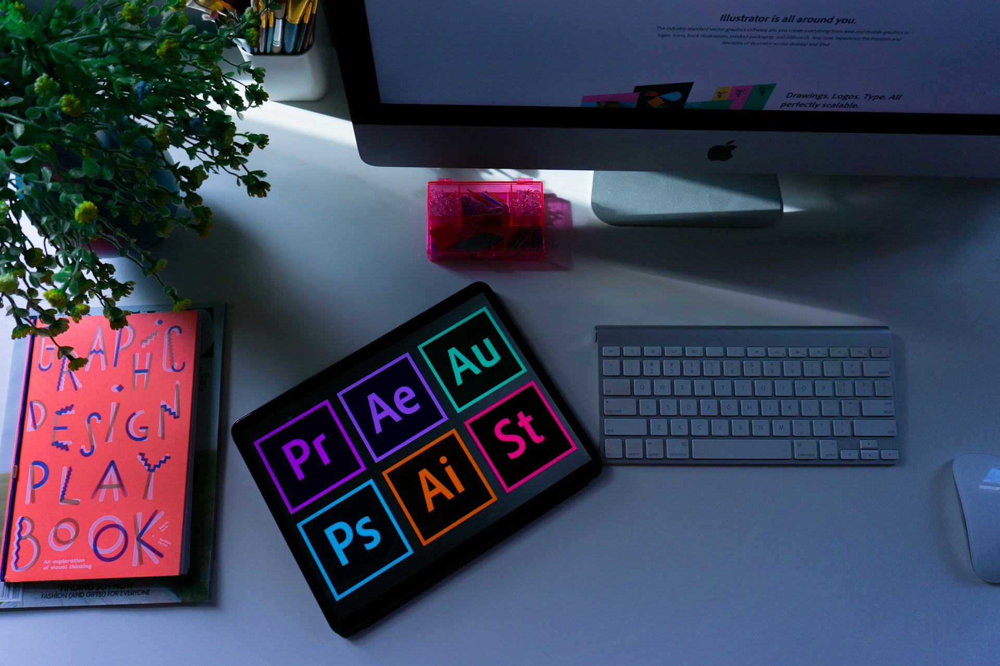

Mijn naam is Dario Thoelen, ik ben 22 jaar en woon in Tessenderlo-Ham. Momenteel volg ik de opleiding Graduaat Programmeren aan Thomas More, waar ik mijn kennis en vaardigheden op het gebied van softwareontwikkeling verder ontwikkel.
Mijn studietraject heeft me de kans gegeven om verschillende interesses te ontdekken. In het secundair onderwijs startte ik in 2016 met de richting Techniek in Actie (TIA) aan KSD Diest. Daarna volgde ik Industriële Wetenschappen aan dezelfde school. Omdat deze richtingen minder goed bij mijn interesses aansloten, maakte ik de overstap naar Grafische Media aan Campus MAX in Tessenderlo. Daar leerde ik werken met programma's zoals Photoshop en Illustrator, maar ook met printmachines en fototoestellen.
Vervolgens koos ik voor de richting Multimedia, waar ik me meer kon verdiepen in de digitale aspecten van grafische vormgeving. Ik werkte met Adobe-programma's zoals Photoshop, Illustrator en InDesign en maakte kennis met het ontwikkelen van websites.
Daarna begon ik aan de opleiding Toegepaste Informatica aan Thomas More in Geel. Later specialiseerde ik me in Cloud & Cybersecurity. Uiteindelijk merkte ik dat deze richting minder goed aansloot bij mijn interesses. Daarom besloot ik mijn studies stop te zetten en een jaar werkervaring op te doen. Nadien koos ik voor de opleiding Graduaat Programmeren, omdat ik me verder wil ontwikkelen in programmeren en softwareontwikkeling.
Ik ben geïnteresseerd in technologie, programmeren en het ontwikkelen van digitale oplossingen. In mijn vrije tijd houd ik me graag bezig met fitness, padel en gamen. Deze hobby's zorgen voor een goede afwisseling tussen mijn studies en mijn vrije tijd.
Tijdens mijn studietraject heb ik verschillende technische vaardigheden opgebouwd op het gebied van grafisch ontwerp, webontwikkeling en programmeren. Ik heb ervaring met Adobe-programma’s zoals InDesign, Photoshop, Illustrator, After Effects en Premiere Pro, waarmee ik onder andere grafische ontwerpen en videobewerkingen kan maken.
Daarnaast heb ik kennis van HTML en CSS voor het ontwikkelen en vormgeven van websites. Ook heb ik ervaring met scripting en SQL, waarmee ik de basisprincipes van programmeren en databases heb leren kennen. Verder heb ik kennisgemaakt met Docker, een tool waarmee applicaties in containers kunnen worden uitgevoerd.
Ik blijf mijn technische vaardigheden verder ontwikkelen tijdens mijn opleiding Graduaat Programmeren, met als doel mijn kennis te verdiepen en deze toe te passen in toekomstige projecten.

Tijdens mijn opleidingen heb ik verschillende persoonlijke vaardigheden ontwikkeld die belangrijk zijn bij het werken aan projecten en het samenwerken met anderen. Ik heb geleerd om probleemoplossend te denken en op zoek te gaan naar praktische oplossingen wanneer ik met een uitdaging word geconfronteerd. Daarnaast vind ik het belangrijk om nauwkeurig en gestructureerd te werken, zodat taken correct en efficiënt worden uitgevoerd.
Ook heb ik geleerd om duidelijk te communiceren en samen te werken in groep. Hierbij is het belangrijk om ideeën uit te wisselen, afspraken te maken en rekening te houden met de mening van anderen. Verder heb ik ervaring opgedaan met deadlinegericht werken en het plannen van taken om opdrachten tijdig af te ronden. Tot slot heb ik geleerd om informatie op een duidelijke, gestructureerde en professionele manier te documenteren, zodat anderen mijn werk gemakkelijk kunnen begrijpen en opvolgen.
Nederlands: Nederlands is mijn moedertaal. Ik spreek en begrijp de taal vloeiend.
Engels: Ik kan Engels goed begrijpen, lezen en spreken. Hierdoor kan ik vlot communiceren en informatie in het Engels verwerken.
Frans: Ik beheers de basis van het Frans en kan eenvoudige woorden en zinnen begrijpen en gebruiken.
Op deze pagina krijg je een overzicht van mijn profiel, vaardigheden en ervaringen. Wil je mijn cv liever als document bekijken of downloaden? Dan kan je het cv-bestand hieronder terugvinden.
CV - Bestand